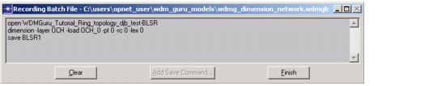

Batch Console > Recording a SP Guru Transport Planner Batch File > Recording Batch File Dialog Box
Recording Batch File Dialog Box
The Recording Batch File dialog box appears when you click Record Batch File in the Batch Console Dialog Box, and stays open as long as you are in "recording batch file" mode. As you open scenarios and run design operations, this window shows the batch commands that correspond to your actions (opening a scenario, routing a traffic matrix, and so on).
Figure 16-2 Recording Batch File Dialog Box

| Home © 1987-2007 OPNET Technologies, Inc. All Rights Reserved. This software may be covered by one or more U.S. Patents. See complete patent notice in the Legal Notices section. OPNET Support Center |